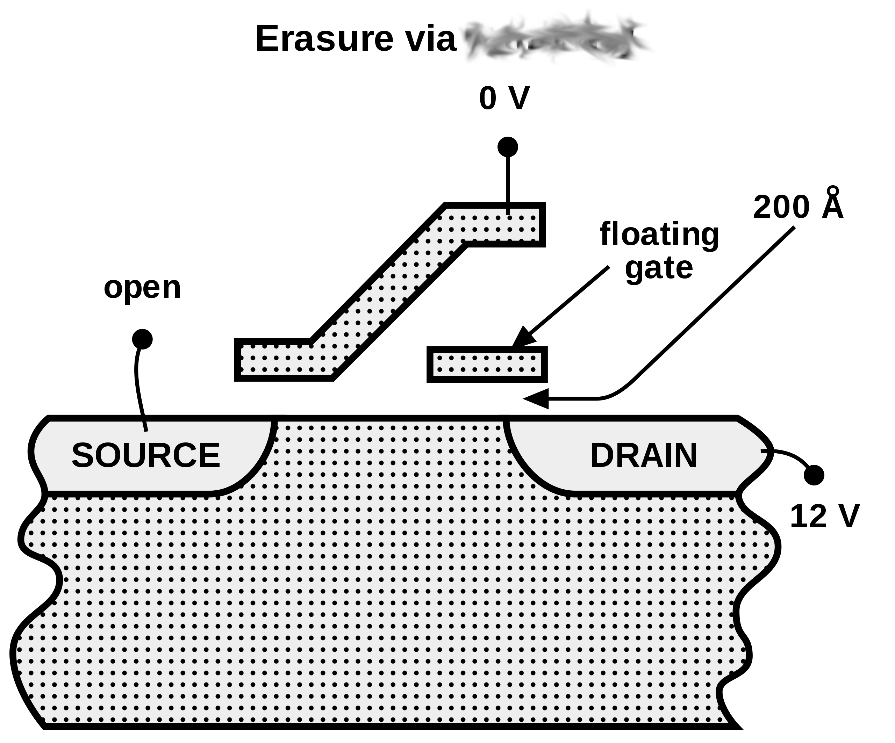

I'm trying to make my own version (rip-off) of USB drives in order to make loads of profit. In order to make my PSB (Proprietary Serial Bus) drives, I need to know how USB drives erase their memory. I found the image below that seems to be related to the process, but someone obscured the important part of the image. Who knew a universal standard was under so much secracy. Can you help me figure out the process by which erasure is done?
